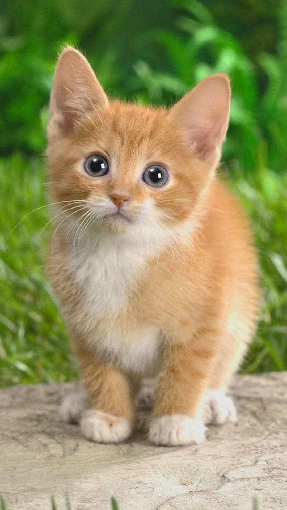
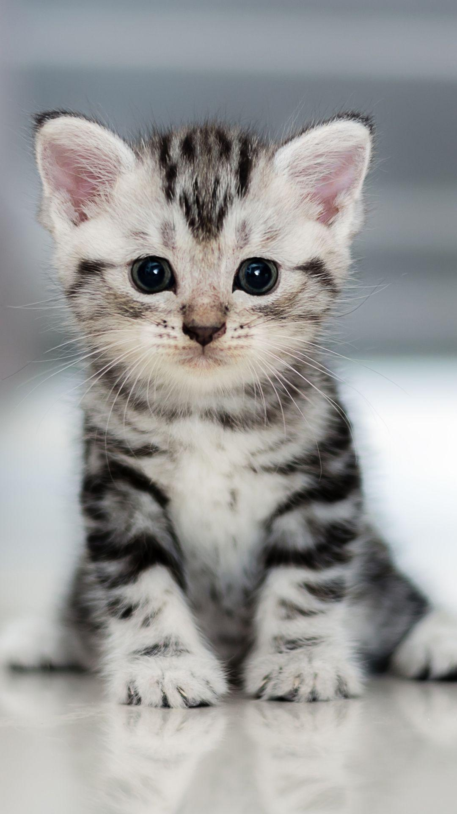

Mario Rossi
Lun, 13/12/2021

Cats are believed to be the only mammals who don't taste sweetness. Cats are nearsighted,
but their peripheral vision and night vision are much better than that of humans.
Lun, 13/12/2021
Elis Miao
Lun, 17/12/2021
Lun, 17/12/2021
 This interesting fact about cats is guaranteed to wow at your next dinner party. Did you know
that originally it was thought that Egyptians domesticated the cat?
This interesting fact about cats is guaranteed to wow at your next dinner party. Did you know
that originally it was thought that Egyptians domesticated the cat?
Gattino Micino
Lun, 13/01/2021

If you thought cats spent a lot of their lives sleeping, you’d be right.
According to Veterinary Hub.Cats actually spend 70% of their lives sleeping, which works out to around 13-16 hours a day.
Lun, 13/01/2021